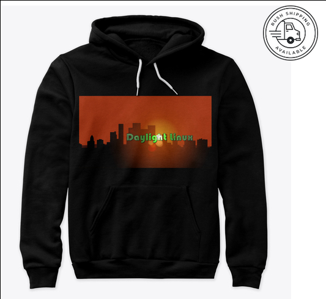

Project archive
Merchandise
Daylight Linux merchandise was originally offered to support development. This page is preserved as part of the project history; no active shop is currently linked.

Daylight Linux merchandise was originally offered to support development. This page is preserved as part of the project history; no active shop is currently linked.
